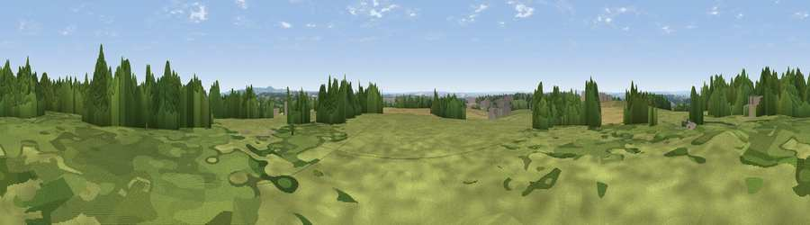

Viewpoint near Smisby
#36685 in England · top 65% of its area beats it · near Smisby · path 251 mWhere it is
The exact computed spot (SK 34675 19875). Click the marker for map links.
Public access: the nearest public right of way is about 251 m away — the final stretch may cross private land. Computed from Natural England's CRoW access layer and OpenStreetMap rights of way — not the legal definitive map. Always verify locally.
The view, rendered

A 360° render of this exact spot computed from the terrain model, tree cover and land cover — summer colours, afternoon light, calibrated against photographs of famous viewpoints. Real trees, hedges and buildings will differ in detail.
The panorama
Grey silhouette: terrain skyline in each direction (720 bearings, Earth curvature and refraction included). Dashed green: skyline with trees (+15 m) and buildings (+8 m) as obstacles. Blue strip: how far the ground is visible on each bearing.
Where the view opens
Wedge length = distance to the farthest visible ground on that bearing (vegetation-aware). Rings at 10, 25 and 50 km.
What fills the view
40% grassland · 36% woodland · 21% cropland · 3% built-up
Angular shares of the visible panorama (visual magnitude), not map area. Landscape diversity 0.51 (0–1 Shannon).
Key numbers
More beautiful places nearby
The staircase of upgrades: each row has a higher view potential than everything closer. Driving times are estimates from straight-line distance, calibrated against real road routing — check an actual route before setting out.
| Place | Direction | Drive | Score |
|---|---|---|---|
| Viewpoint near Smisby | NE · 1 km | ~3 min | 52.0 |
| Viewpoint near Hartshorne | NNW · 2 km | ~5 min | 57.6 |
| Viewpoint near Whitwick | ESE · 10 km | ~19 min | 63.5 |
| Viewpoint near Whitwick | ESE · 10 km | ~20 min | 71.2 |
| Viewpoint near Stanton under Bardon | ESE · 13 km | ~24 min | 76.0 |
| Viewpoint near Woodhouse Eaves | ESE · 17 km | ~30 min | 77.7 |
| Viewpoint near Mow Cop | NW · 62 km | ~84 min | 80.2 |
| Viewpoint near Little Wenlock | W · 72 km | ~96 min | 84.2 |
52.77536, -1.48743 · source: screening · position refined by local search. Computed location — check access rights before visiting.